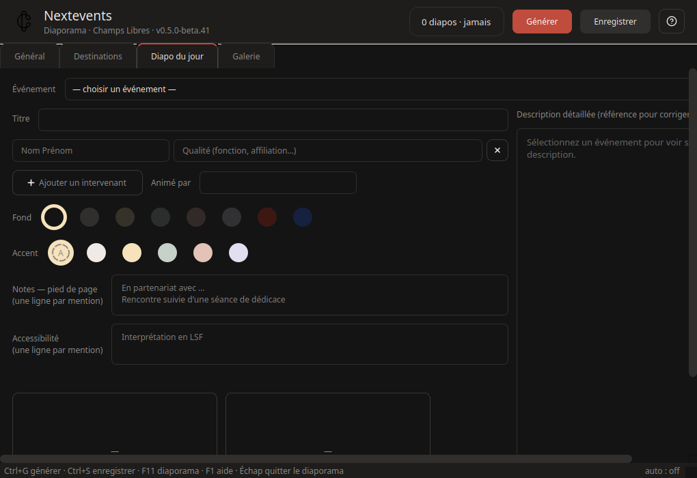

Une diapo à part, générée à la main pour l'événement du jour (hall, auditorium) — indépendante du diaporama, écrite dans today/ et poussée comme le reste vers les destinations.
Événement — la liste vient de la dernière génération ; le choix pré-remplit titre, intervenants, animateur, notes, accessibilité et date. Tout se retouche avant génération — la description détaillée en colonne de droite sert de référence.
Contenu — intervenants (nom + qualité par ligne), animateur (« Animé(e) par » accordé à la catégorie), notes libres en pied de page, mentions d'accessibilité une par ligne (LSF, audiodescription, boucle magnétique…).
Fond et accent — palette de couleurs ; une série éditoriale applique automatiquement son modèle (fond marine, badge ou logo de série si fourni).
« Générer la diapo du jour » produit index.png (+ qr.png pour les séries — QR code renvoyant à la page du programme) ; les vignettes s'ouvrent en grand au clic, « Supprimer » retire les fichiers générés.